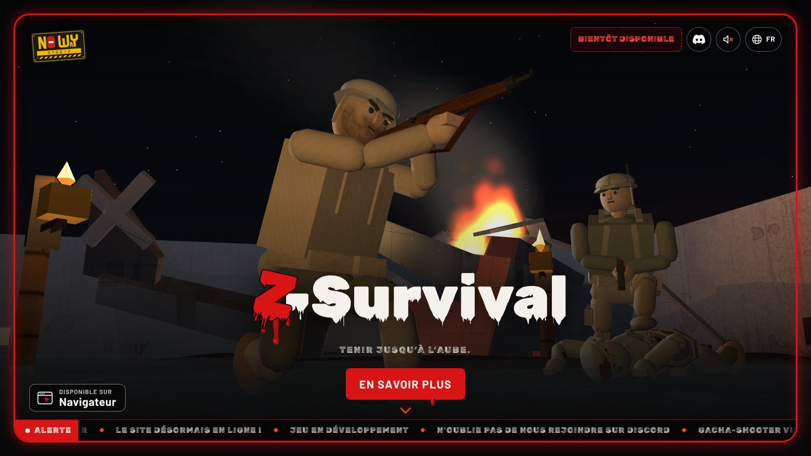
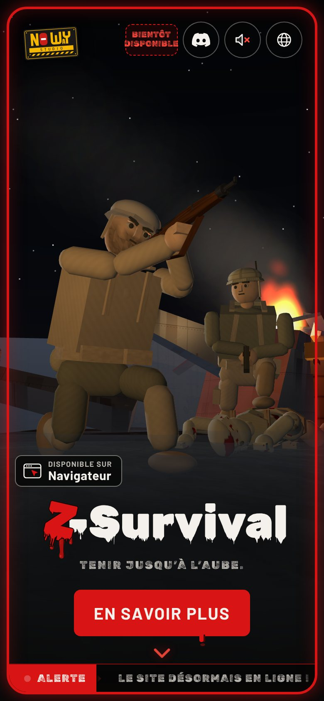
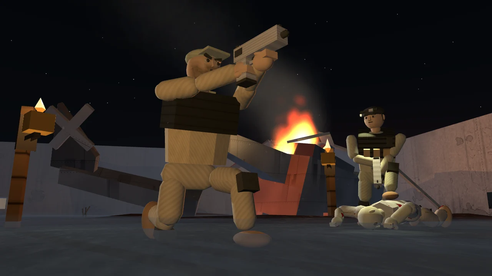
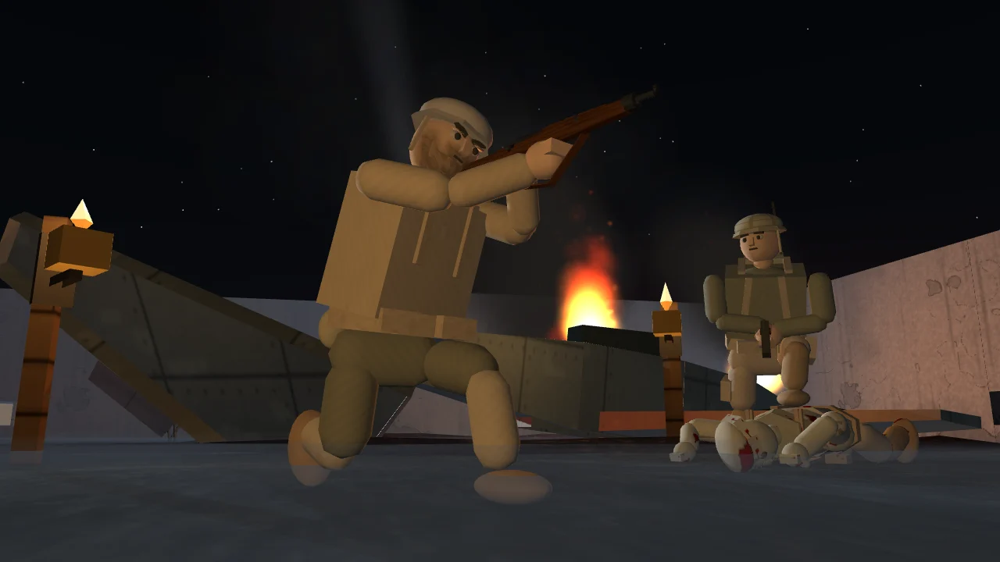
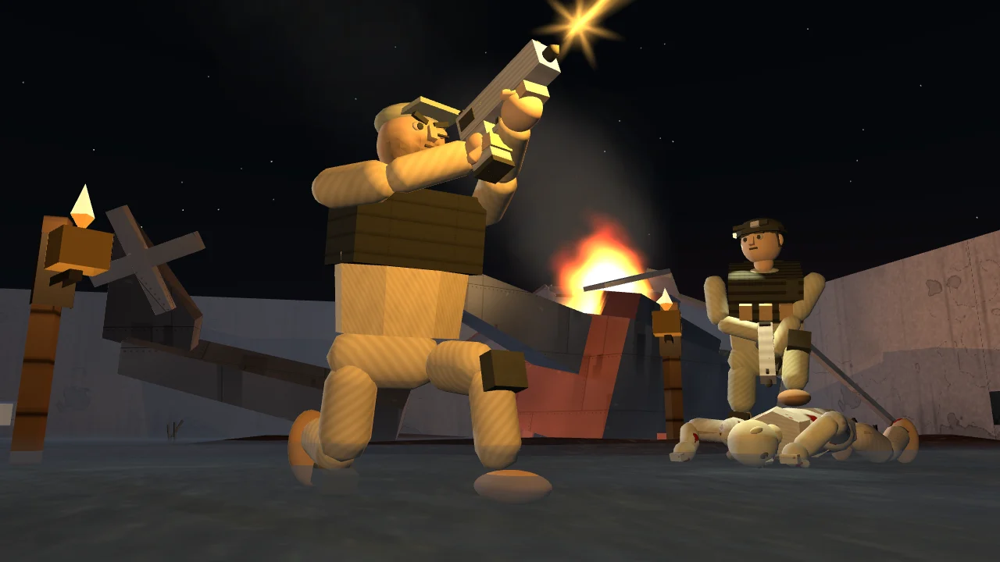
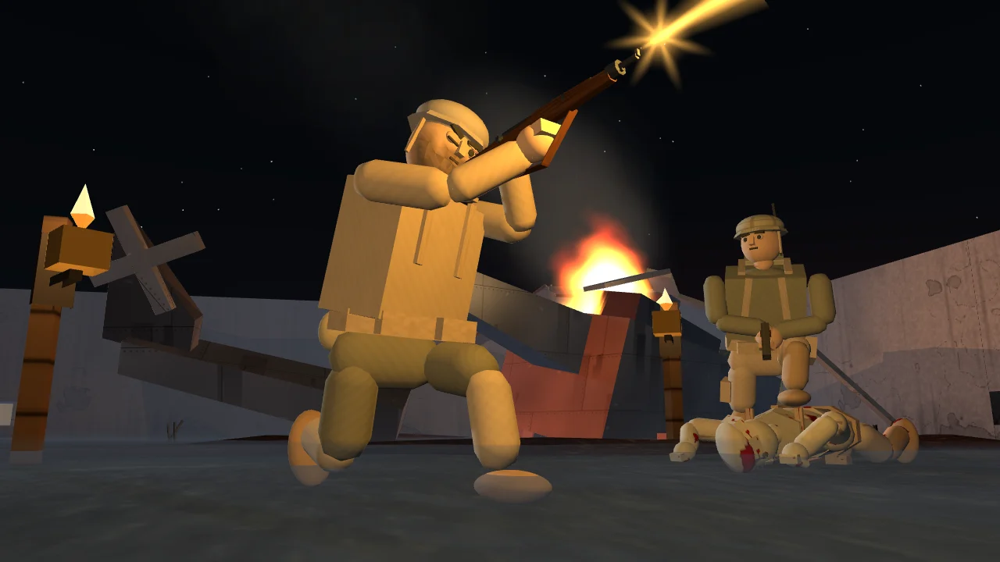
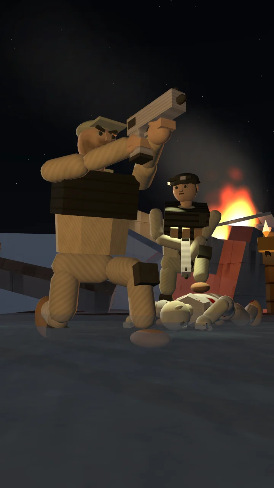
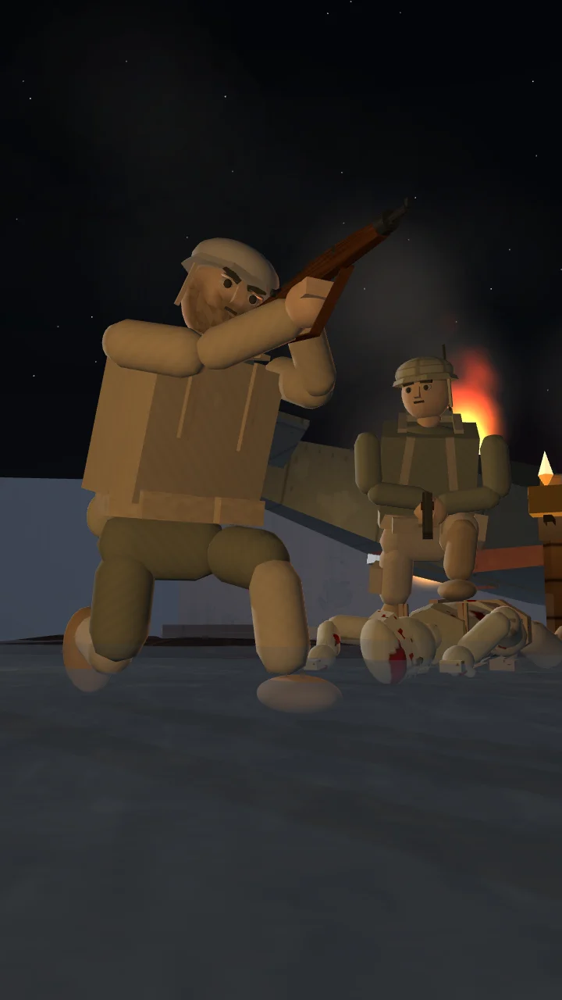
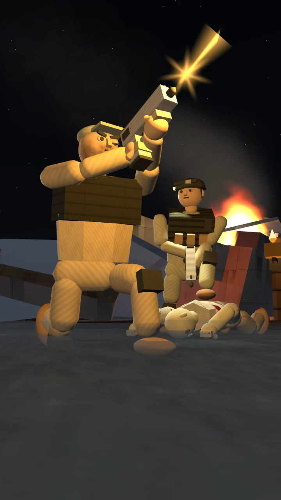
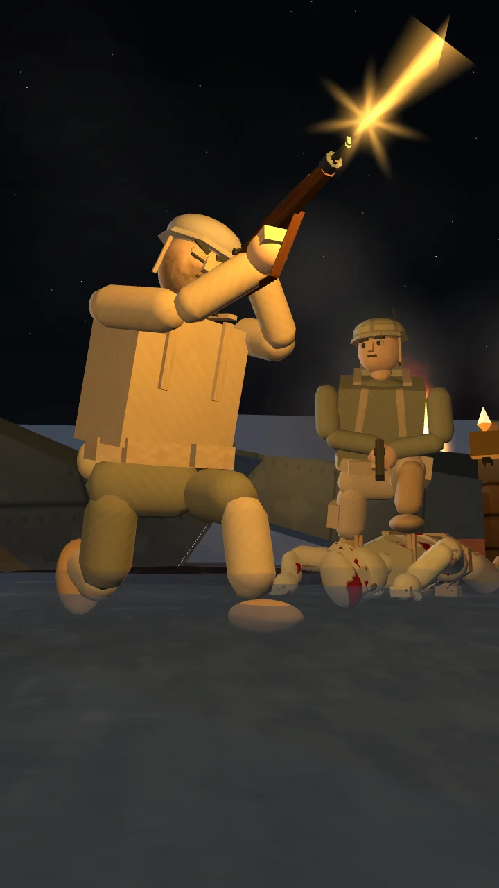

v2 Voir en mouvement
La scène v2 tourne en direct dans le navigateur (lourd sur téléphone). L'aperçu la pose sous la vraie page d'accueil du site, plein écran, avec le flash du cadre aux deux tirs.
- Aperçu : la v2 sous l'accueil du site
- La scène v2 seule, paysage (ordinateur)
- La scène v2 seule, portrait (téléphone)
- Essai : les tenues de la première v2 (survivant tactique, militaire, zombie en blouse)
- Essai : la première version (tireur droitier, visée à gauche de l'écran)


B Paysage 16:9 (ordinateur)
Chaque paire : la v1 (vidéo actuelle de l’accueil), puis la v2 (côte à côte sur un écran large, l’une sous l’autre sur téléphone).
Avant le tir (t = 4,7 s)


Pendant le tir du personnage 1 (t = 5,24 s)


B Portrait 9:16 (téléphone)
À gauche la v1, à droite la v2.
Avant le tir (t = 4,7 s)


Pendant le tir du personnage 1 (t = 5,24 s)


↻ Historique de la v2
Une ligne par mise à jour de la copie du jeu (node outils/scene/copier-jeu.mjs), la plus récente
en haut. Détail des fichiers : scene-v2/jeu/ORIGINE.json.
-
20/11/2026 ·
dev@2f7716a(« Merge pull request #179 from Nowyyy/lot-9h ») · nouvelles tenues- Copie du jeu refaite : 4 fichiers ajoutés (recettes des tenues d'époque, décor d'époque), 8 modifiés (personnages, décor).
- Tenues d'époque du jeu : Survivant (fantassin américain de 1942) pour le personnage 1, parachutiste radio pour le personnage 2, zombie soldat casqué. Casques un peu remontés pour qu'on voie les yeux de près.
- Décor d'époque du jeu (avion écrasé, jeeps) pas encore pris : la scène garde l'hélicoptère.
- Corps moins « sac » : veste à la coupe nette, trame du tissu adoucie, pantalon et veste mieux contrastés.
- Torse qui se traversait corrigé : veste d'un seul bloc jusqu'au ceinturon.
-
20/11/2026 ·
dev@622df2c(copie inchangée) · retours du propriétaire- Téléphone : un espace sépare les deux personnages ; le personnage 1 reste dans la bordure du site, ce sont le zombie et le personnage 2 qui passent un peu à droite.
- La douille du Colt part vers le bord droit de l'image (elle traversait toute l'image vers la gauche).
- Le personnage 1 tourne la tête seulement après avoir réarmé, un court instant après.
- Colt : la glissière recule au tir (la douille sort) puis revient en avant.
-
19/11/2026 ·
dev@622df2c(copie inchangée) · retours du propriétaire- Personnage 1 gaucher : il vise à droite de l'écran (comme la v1), visage visible, œil droit fermé au tir ; la main droite manœuvre le verrou.
- Douilles des deux armes : elles volent jusqu'à sortir de l'image (plus de disparition en l'air) ; celle du Colt est maintenant visible.
-
19/11/2026 ·
dev@622df2c(« Merge branch 'lot-9e' into dev ») · première copie- Armes refaites du jeu (lot 9c et 9e du jeu) : le Kar98k (personnage 1, verrou animé) et le Colt M1911 (personnage 2) remplacent l'ancien pistolet.
- Kar98k épaulé à droite, joue sur la crosse ; il visait à gauche de la caméra pour que son visage reste visible.
- Par rapport à la copie de la v1 (
dev@3c25e3a) : 11 fichiers ajoutés (armes, corps long), 16 modifiés (personnages, squelettes, hélicoptère, carte, fenêtres, textures, couleurs). - « Corps long » du jeu (épaules plus étroites, bras plus longs) pas encore pris : la scène garde ses propres proportions.